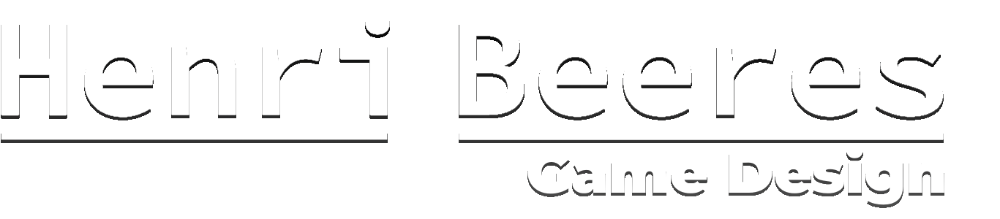
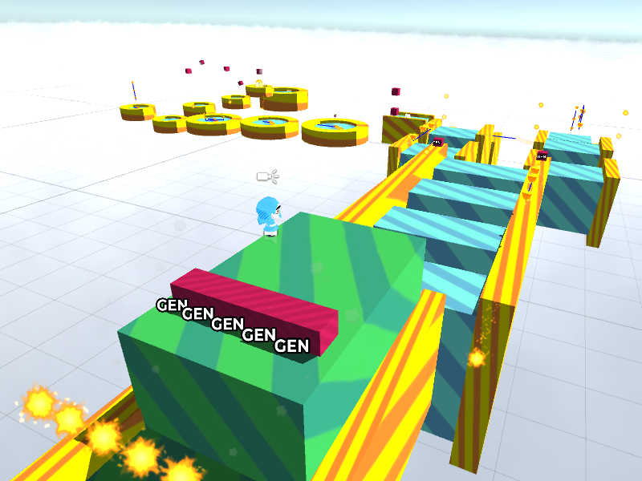

About me
I specialise in programming and level design, but am also proficient in pixel art, sound design, video editing and music composing.
Unity is my game engine of choice, with 5 years of experience. Though I'm also no stranger to the inner workings of the Unreal Engine.
This site outlines my most recent (fan-)projects where I have played a major role in level design.
If you are interested in working with me, please use the contact info at the bottom of the page!
|
|
|
|
1 / 4

The first levels serve as an introduction to all basic ideas commonly used throughout the game, such as the cape swipe mechanic.
2 / 4

High jumps are another common mechanic introduced right at the start! They are charged up by ducking, so the player must crawl through a narrow gap and will notice the visual and audio cues.
3 / 4

The level "Corridors of Nature" deals with vines and pendulum platforms. It begins with a playground introducing the ideas.
4 / 4

The level finishes in a scrolling section in which the player must maneuver around vegetation growing all around them.
|
|
|
|
1 / 4

Levels like "An Inconvenient Descent" may toy with the player's innate abilities. Here, an updraft mechanic allows for flight.
2 / 4

The updraft later returns in one of the boss battles, creating an intense setpiece and unique situation.
3 / 4

At one point, the player encounters a set of minibosses. Artemis and her cohorts serve as a tutorial for the swipable star mechanic.
4 / 4

In a later, more intense boss fight, the swipable stars are re-used as the primary form of damaging the boss during a powerful array of attacks, in order to ensure the player rarely has to wait for an attack opportunity.
|
|
1 / 3

"Apollo" is a twist on the "head-and-hands" boss trope, made up of four hands that combine to form a face. After two hands are destroyed, the boss changes its attack pattern.
2 / 3

Bosses like "Neko-san" don't adhere to a strict pattern, but instead watch the player's movements and counterattack when given the chance. The player must be cunning to breach the boss's defenses!
3 / 3
Every boss has a remixed fight in which their properties are adjusted to accentuate their strengths. Neko-san's reaction speed greatly improves, strengthening the emphasis on paying attention to your opponent's movements.
|
|
|
|
1 / 1

The vast array of helpful items, courtesy of Mr. Sir.
2 / 2

Levels frequently feature sequence break-able areas to be discovered and exploited by cunning players. The Bubble Bottle is particularly effective in the level EZ Train.
|
|
1 / 6

"The Oasis" serves as the central town area. By using excess coins, you are able to upgrade it, adding new services such as a vending machine and accessory shop.
2 / 6

These bonus sections add an extra challenge for players wanting more.
3 / 6
Heart-shaped collectibles can be traded for various goodies, among which there are "treasure maps" that point to optional levels.
4 / 6

One of these bonus areas is "Dryland Base", an uncharacteristically barren wasteland that feels like there should be more to it... and indeed there is!
5 / 6

By solving a series of tutorial puzzles in a hidden cave area, players unearth a mysterious structure.
6 / 6
This structure is "The Stratospire", a big area packed to the brim with puzzles around the puzzle mechanics introduced in Dryland Base.
|
|
|
|
|
|
1 / 3

The goal of each level is to activate all modules connected to the central device simultaneously. The title screen teaches this with coloured buttons, which players have to aim at. Players can also use the title screen to experiment with the game's controls.
2 / 3

Teamwork is essential. Here, one player has to help the other cross a large gap. Since both players are positively charged, one can lift the other to prevent them from falling into the yellow death ray.
3 / 3

We built levels by using a tilemap for the terrain. Once the terrain was mostly final we added and linked objects such as doors and switches to the levels. This allowed us to prototype and adjust levels and individual challenges in a matter of minutes.
|
As the project lead and main programmer I had my hands on various parts of this game's development. I programmed most of the game, designed nearly every scene, did a lot of sound design and gave creative direction and feedback when necessary. |
|
|
|
|
1 / 3

Demo in the game's hub, 'Popsicle Garden'. Next to her is a teleporter to one of the stages.
2 / 3

Showcase of 'Candy Cove', one of the levels I designed. The player start point is on the platform to the right. The level is designed with 4-step level design in mind and is built around the red and white platforms which spin in various ways.
3 / 3

Showcase of 'Sorbet Sky'. Just like Candy Cove, I designed this level with a focus on 4-step level design. In this level, the player has to jump between platforms and avoid the fireballs generated by the red boxes. When the player steps on a blue platform, it turns green, giving the player an extra challenge of turning all platforms green for a reward.
|
My role in this game was to design the hub and two platforming stages. In order to do so, I created a few textures and meshes and helped out with the game's programming by creating a script for moving platforms. |